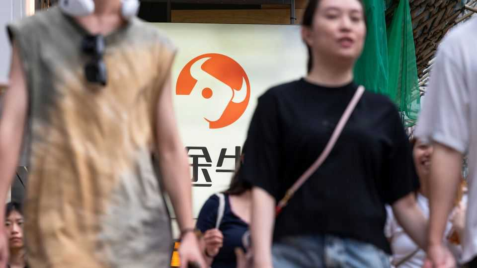

China cracks down on rule-bending offshore investments
It wants mainland investors to bet on its own tech dreams, not America’s
July 2nd 2026

SOUNDWILL PLAZA in Hong Kong used to host a restaurant dedicated to the Transformers film franchise. The burger buns were stamped with robot faces and the gift shop featured a towering model of Optimus Prime (a robot that can transform into a lorry) striding through a portal. Last year, however, fast food gave way to fast finance. The site was taken over by Futu Securities, a tech-savvy brokerage with over 3.5m clients. Futu boasts it can open a new account in as little as three minutes—about the time it takes to flip a burger.
When the flagship store opened in August, Futu was doing a lorry-load of business. But some of its client accounts have drawn the ire of the authorities in mainland China, which maintains strict capital controls. In May they accused Futu and several similar brokers of offering services on the mainland without a licence. Futu faces a fine of some $271m and must close illegal accounts in two years. The price of its shares, listed on America’s Nasdaq Exchange, is down by a fifth since May 21st.

The timing of the crackdown was unusual. In the past regulators have tightened capital controls when China’s exchange rate was looking wobbly. But the yuan has been one of the best-performing currencies in Asia over the past year (see chart). Its rise could erode the competitiveness of China’s exports, which have been propping up the economy’s growth. Capital outflows, which were large in March, have relieved that pressure on the currency. The crackdown will instead add to it.
Regulators may fear they have no choice. China’s balance of payments may not always be as robust as it looks now. Higher prices for imported semiconductors are already eating into its trade surpluses. America’s Federal Reserve, under new management, is expected to raise interest rates at least once this year; China’s central bank might still have to cut.
A widening rate gap will encourage more Chinese money to seek higher returns abroad. America’s towering tech debuts on the stock market have already caught the jealous eye of Chinese investors. At the Lujiazui financial forum in Shanghai this month, some mainlanders grumbled about their exclusion from the recent SpaceX listing. (Futu is offering shares worth up to HK$1600, or $205, in Elon Musk’s rocketry firm as a bonus to new account-holders this month.)
In a speech in Shanghai, Zhu Hexin of China’s State Administration of Foreign Exchange observed that capital flows have become more volatile. Investors’ money is also crowding in “future industries” like artificial intelligence and biomanufacturing, following a “tech narrative”. The government, he said, wants to ensure capital serves the “real” economy “while safeguarding the bottom line of security”.
Mr Zhu insisted that China will still open up more fully to global capital, as stated in the country’s five-year plan released last year. But the government is keeping a closer watch on the doors investors use. New regulations on outbound investment, which came into effect on July 1st, broaden the definition of direct investments, vet them more rigorously for their national-security implications and subject them to ongoing monitoring even after the transaction is completed. Chinese officials are on their guard against the “Singapore wash” after Manus, a Chinese AI firm, reinvented itself as a Singaporean entity so that it could sell itself to Meta, only for China to then block the deal.
Another trend is the “renminbification” or “renminbisation” of overseas assets—ugly and uglier words for raising the yuan’s global stature. Banks are encouraged to lend abroad in China’s currency, not dollars. This ought to ease some of the risks of opening up. Loans and deposits in yuan already account for almost 40% of Chinese banks’ foreign assets, up from less than 20% four years ago. The share “is substantial and increasing”, points out Alicia García-Herrero of Natixis, a bank.
Every other outflow will be limited by quotas or “closed loops”. Mainlanders can, for example, buy a range of shares and bonds in Hong Kong through an official “connect” scheme. But when they buy the securities they pay brokers in yuan, not Hong Kong dollars. And when they sell, the proceeds are returned to them in the same currency, closing the loop. Approved institutional investors (including mainland banks, insurance companies and securities firms) are also allowed to accumulate foreign financial assets, which they can then package into funds and other products for their clients. But their combined holdings are subject to a quota of $176bn. The limit has already been raised once this year, and Mr Zhu said it would be raised again. But it remains “tiny”, says Ms García-Herrero.
China’s leaders like to build things, at home and abroad. They also like to see their national champions and national currency gain ground overseas. But they cannot shake the suspicion that capital outflows are “unpatriotic and damaging to the Communist Party’s prestige”, as Gabriel Wildau of Teneo, a consultancy, has put it. They do not want their citizens betting on foreign “tech narratives” that compete or conflict with their own vision of the future. If money is to stride out of China, it must pass through portals they approve of.■
For more expert analysis of the biggest stories in economics, finance and markets, sign up to Money Talks, our weekly subscriber-only newsletter.